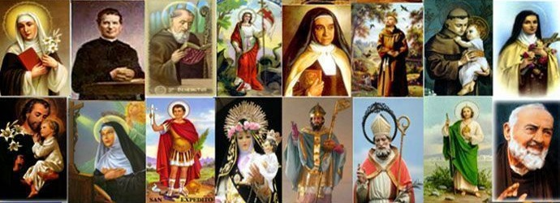
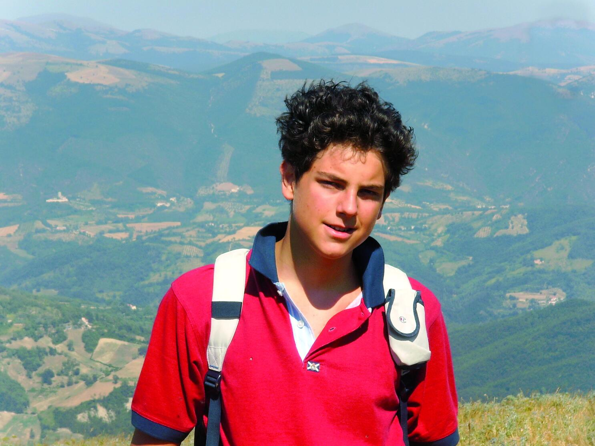
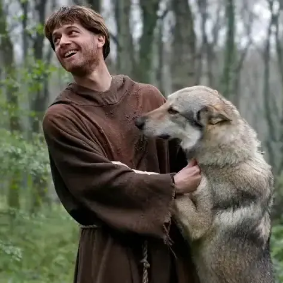
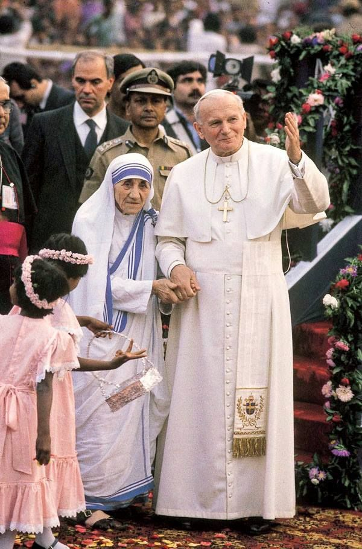
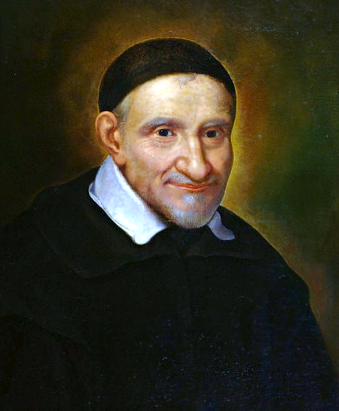
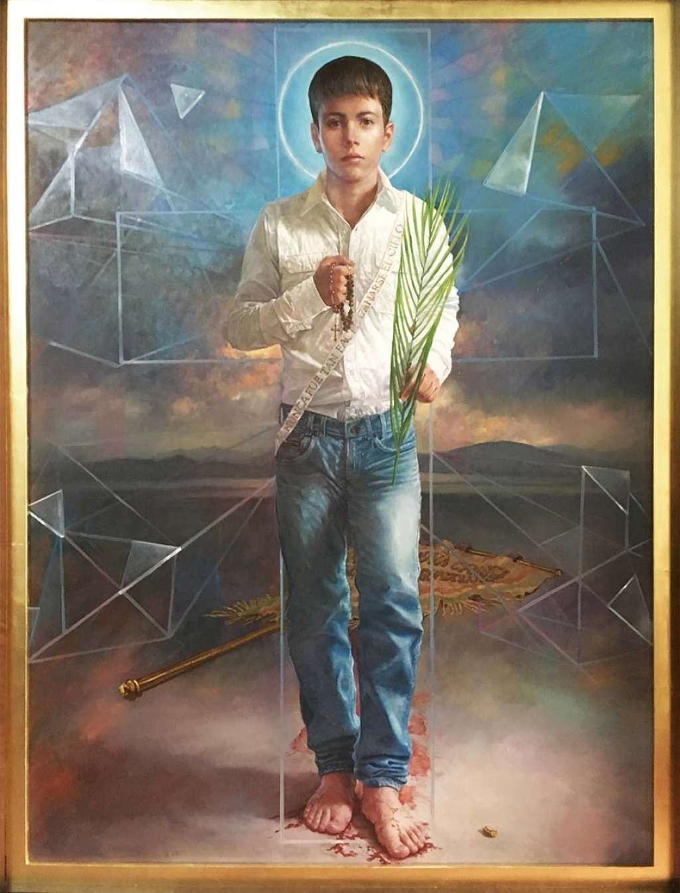
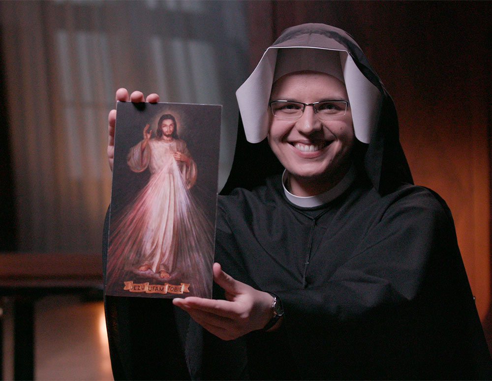
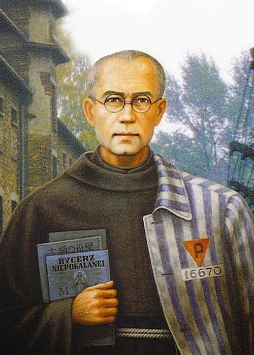

All Hollow's Even
+ Preparando la Vigilia de todos los Santos +
|
Ideas para celebrar un Halloween Cristiano |
Listos para vivir la Fiesta de todos los Santos |
||||
|---|---|---|---|---|---|
|
 | ||||
|  |  |  |  | ||
|  |  |  |

|
||